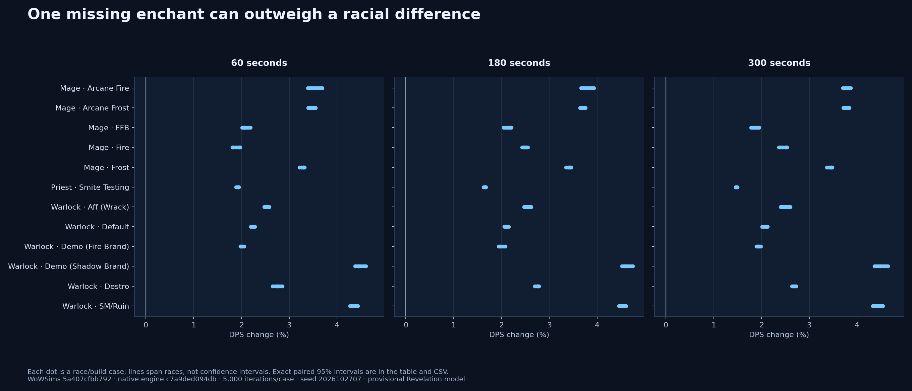
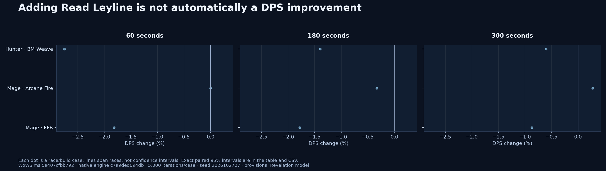

All-spec and race audit
76 faction/build entries across all nine classes. 143 native guard controls passed every iteration; 207 explicit sensitivity cases ran at 60, 180 and 300 seconds. This screens presets and measures specific alternatives; it does not validate every class mechanic.
What changes the interpretation
Several caster reference weapons lack a permanent enchant. Adding Revelation (8217) is a narrow, labeled alternative with identical items, talents and encounter. Its current flat proc model is provisional. These gains do not establish an optimal set or justify mixing gear tiers in class rankings.
The Shadow Brand warning refers to Revelation, which is absent from the unenchanted fallback weapon. Its known-aura guard disables that branch. Constant-false native controls preserve every iteration: this warning alone is not a broken rotation. Other warnings remain available for review.
Read Leyline belongs to High Order Skyborne. Prepending it at ≤65% mana can cost damage through timing and channel interactions. These cases show why a missing mana action should be tested before recommending it.
Item-based known-spell guards are left unresolved by the metadata screen. An earlier exploratory classifier treated item IDs as absent spell IDs and failed eight controls; those exploratory outputs are superseded by this corrected audit.
Coverage CSV · Every sensitivity and 95% interval · Warnings and controls · Exact provenance

One missing enchant can outweigh a racial difference. These are explicit sensitivity experiments, not optimized gear sets.
Adding Read Leyline is not automatically a DPS improvement. These are explicit sensitivity experiments, not optimized gear sets.Complete coverage
Counts refer to race/time cases. Warning counts include unresolved and actionable diagnostics; they are not a count of confirmed defects. The exported aliases and excluded Mutilate builds remain explicitly listed in audit.json.
Every tested alternative
Paired differences share seeds within WoWSims. ± denotes the 95% Monte Carlo half-width in DPS; model and gear uncertainty are larger than sampling error in some cases. Baselines are preserved.
Source simulator 5a407cfbb7924f8e03ce732437b6d61ac1ded8bb; tool hashes and archived source provenance accompany this report.
Gear effect beside racial spread
In 186 of 198 tested race/time cases, the measured missing-enchant gain exceeded the observed best-to-worst racial spread in the same full-support developer build. This is a scale comparison under the current model; it does not establish optimal gear or mechanic accuracy.
Every enchant gain beside its build’s racial spread